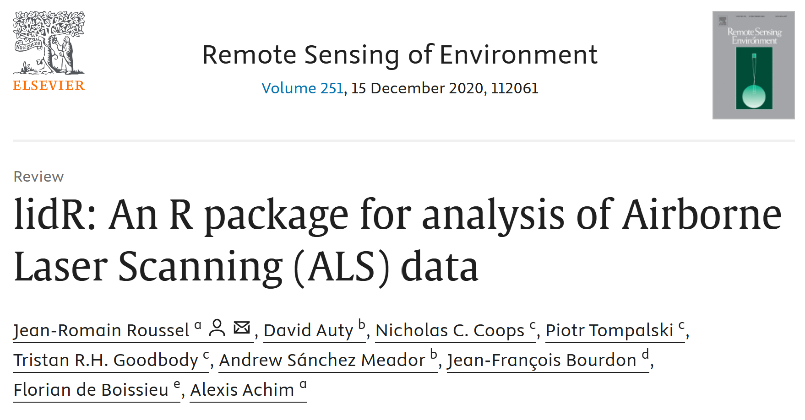

Presenters
- Liam A.K. Irwin - PhD Student
- Brent A. Murray - PhD Student
- Sadie Russel - PhD Student
- Nicholas C. Coops - Professor
Integrated Remote Sensing Studio University of British Columbia Vancouver, Canada

Overview
- Light Detection and Ranging (lidar)
- The lidR package - a brief introduction
- Workshop overview
What is lidar?
- Light Detection and Ranging
- Active form of remote sensing
- Measures distance to target surfaces with millions of narrow light pulses
- Airborne laser scanning performs lidar systematically from aircraft or drones
Lidar Data – Point Clouds
- Discrete returns are aggregated into point clouds (
.LAS/.LAZ)
- Lidar points have three-dimensional (
XYZ) coordinates, and other attributes (Intensity, ReturnNumber, etc…)
- Point clouds can be processed into vegetation structure summaries with lidR
As with many remote sensing data analyses tasks we are seeking to produce information from simplification to pull a signal of interest (in this case variability in vegetation structure) out of our dataset (a dense point cloud of three-dimensional coordinates that characterize the vegetation)
To do so we often generate summary metrics that act similarly to spectral indices in passive optical remote sensing, they ratio or generate statistics on the distribution of points (max, mean height, canopy cover, percentiles, leaf-area density profiles)
lidR
- Written by
Jean-Romain Roussel
- Package for
manipulating and visualizing ALS data
- Written entirely open source within R-geospatial ecosystem (
terra/sf)
- Most processes run efficiently with back-end
C++ code
Attaching package: 'lubridate'
The following objects are masked from 'package:base':
date, intersect, setdiff, union
Attaching package: 'dplyr'
The following objects are masked from 'package:stats':
filter, lag
The following objects are masked from 'package:base':
intersect, setdiff, setequal, union

r-lidar
- lidR author
Jean-Romain Roussel is commited to maintaining the lidR package as fully open source
- He now runs
r-lidar; a consulting and development company targeted at lidar applications
- Visit
r-lidar.com for more information
Workshop Outline
- Introduction to Lidar, LAStools, and lidR (09:00)
- Preprocessing with LAStools (9:20)
- Reading LAS and LAZ files (09:30)
- Point Classification and filtering (9:35)
- Digital Terrain Models and Height Normalization (9:40)
- Canopy Height Models (9:50)
- Break (10:00)
- Lidar Summary Metrics (10:15)
- Area Based Approach (10:35)
- File Collection Processing Engine (10:55)
- Individual Tree Detection and Segmentation (11:10)
- Questions (11:30)
Get Set Up!
https://liamirwin.github.io/SL25_lidRtutorial/


{kind=link}
{kind=link}